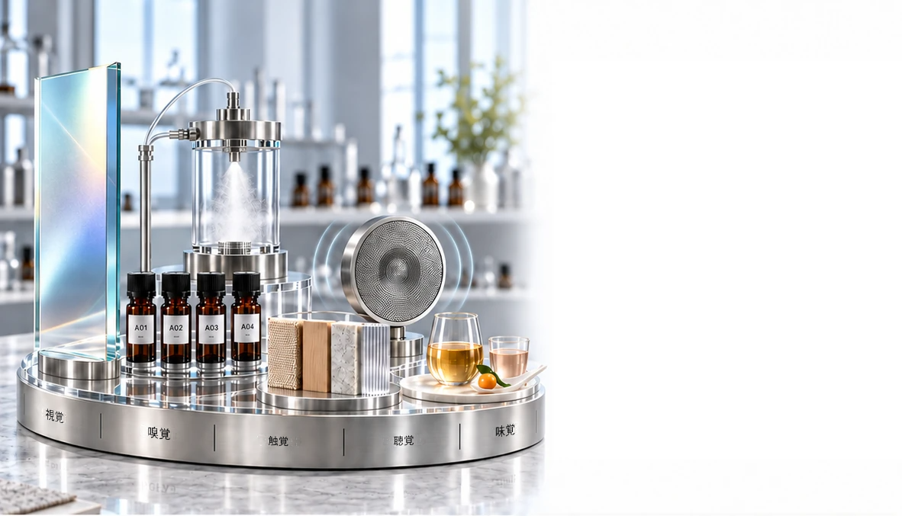

共創
サービス
オーダーメイドの製品・感覚・香りのソリューション
インサイトから市場へ
ブランドと協働し、アイデアを個性ある製品、感覚体験、香りを生かしたソリューションへと変えていきます。
私たちが共に創るもの
コンセプトから市場へつながる、4つの統合された道筋
製品、感覚、ブランド、
機能のイノベーションを、目的に合わせて開発します。


製品
開発・ODM
製品のアイデアを、販売できる形へ
お客様のコンセプトを、対象市場に合わせた個性ある製品へと具体化します。
- オーダーメイドの処方開発
- 製品形態と感覚的な特徴
- パッケージと市場での位置付けの方向性
- 試作から生産までの調整

小売向けフレグランスの
製品開発
香りのコンセプトを、市場に届けられるコレクションへ
ブランドが目指す香りを販売可能な形にし、個性あるフレグランス製品を開発します。
- ファインフレグランス・ホームフレグランス・身にまとう香り
- ディフューザー・ルームスプレー・リネンスプレー
- 香りの処方と製品形態
- パッケージの方向性・サンプル製作・生産調整

オーダーメイドの感覚と
香りのデザイン
ブランドならではの感覚の表現を創る
視覚・嗅覚・触覚・聴覚・味覚
ブランドとそのお客様を中心に設計し、さまざまな感覚の手掛かりを一つの個性ある体験へと組み合わせます。
- 視覚的なトーンと光・香りと嗅覚の方向性・質感と素材
- 音と味・統合された体験のガイドライン

香りを
日々の暮らしへ
創られた香りから、実際の体験へ
一つひとつの香りを、人が実際に体験する場所、製品、日々の習慣に取り入れていきます。
- 到着とお迎え・休息、集中、回復
- 自分と家のための習慣・店舗でのお客様との接点

機能性のある香りの
イノベーション
明確な目的を持つ香りを設計する
心地よい香りにとどまらず、目的に応じた製品や空間の体験につながる、エビデンスに基づいた香りのコンセプトを開発します。
- 生体応答に働きかける香りのコンセプト
- 気分・集中・リラクゼーション・睡眠の方向性
- 活性を持つ香り成分とエビデンスの検討
- 製品・空間・試作品への応用設計

機能性のある香りを
実生活での活用へ
製品、空間、日々の習慣に合わせた目的別の設計
機能性のある香りのコンセプトを、具体的な使用場面に合わせた実用的な形態、デリバリーシステム、体験へと具体化します。
- 一人ひとりのウェルビーイングと香りのセラピー
- スキンケア・パーソナルケア・ウェアラブル形態
- 集中・リラクゼーション・回復・睡眠のための環境
- 香りの届け方の設計・試作品と体験の評価

共に創りましょう
目指すものを、個性ある市場向けの体験へ
製品のアイデア、感覚の方向性、機能の目標をお聞かせください。共に、明確で個性があり、次の一歩へ進める形を創り上げます。